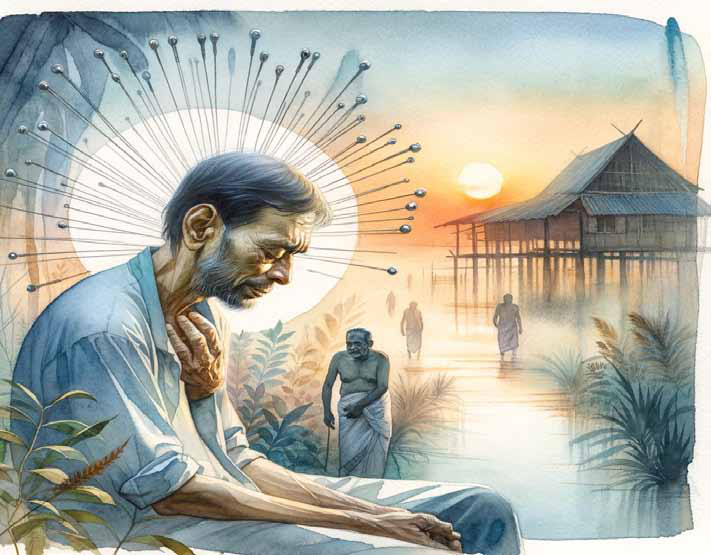
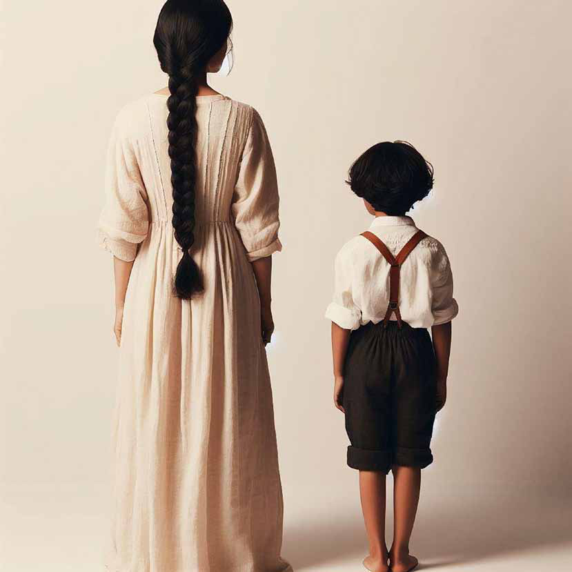
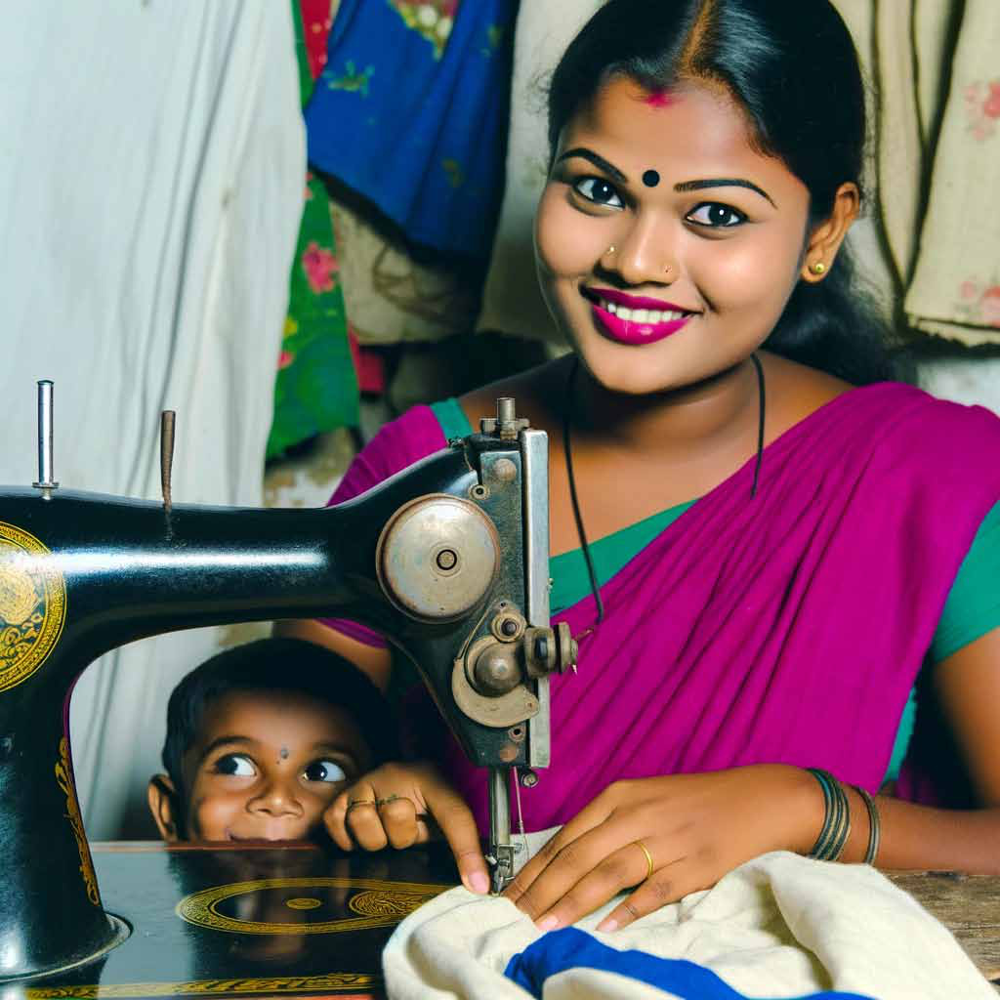
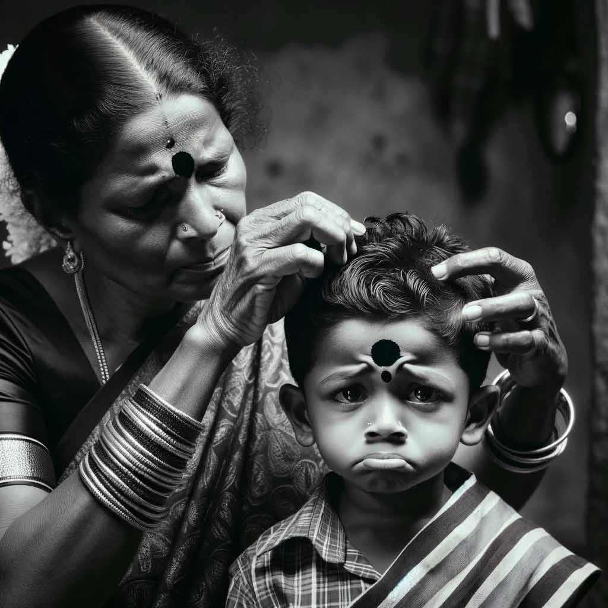
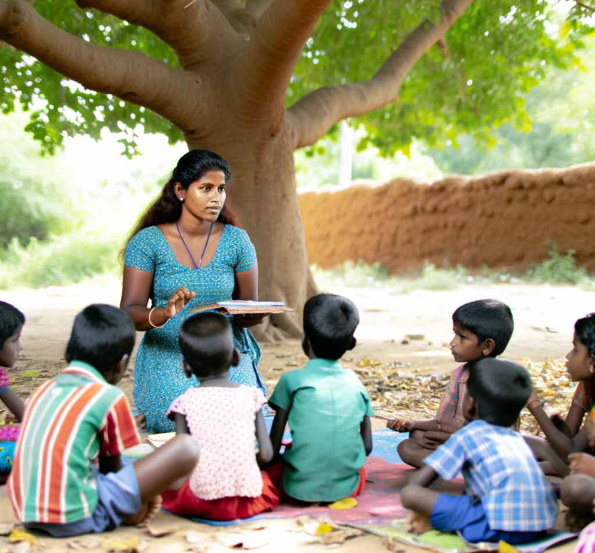

In Jaffna, Unregulated Acupuncture Culminates in Tragic Fatality
In Jaffna, Unregulated Acupuncture Culminates in Tragic Fatality
Jaffna Monitor hellojaffnamonitor@gmail.com 42 I n Jaffna, a distressing event has spotlighted the grave perils associated with unauthenticated and unsanctioned medical practices. Manikkam Sargunaraja, a 64-year-old inhabitant of Achchuvei Vallalay East, succumbed to an infection that developed subsequent to receiving acupuncture treatment. In Jaffna, Unregulated Acupuncture Culminates in Tragic Fatality Jaffna The poster of the acupuncture center where the incident occurred
Jaffna Monitor hellojaffnamonitor@gmail.com 43 Sargunaraja, persuaded by an advertisement on Facebook, sought treatment at an acupuncture facility located on the brown road in Jaffna. This procedure, which entailed the insertion of needles into his knees, led to severe swelling and acute pain in his lower extremities, necessitating his admission to the Jaffna Teaching Hospital. Despite two weeks of intensive medical care, his life could not be saved. Post-mortem analysis revealed that the infection was directly attributed to the acupuncture needles, thus shedding light on a significant oversight in the oversight of alternative medical practices in Sri Lanka. Notably, acupuncture practitioners in the area are not mandated to register, while professionals who are registered with the Sri Lanka Medical Council are prohibited from advertising on Facebook and similar platforms. This harrowing incident underscores the hazards of unregulated medical practices in Sri Lanka's northern region. The escalation of unlicensed practitioners and misleading advertisements in the Jaffna vicinity raises serious concerns. Nevertheless, there seems to be an absence of firm intervention from the Northern Provincial Health Department and local law enforcement agencies in tackling these hazardous practices. The tragedy poignantly illustrates the lethal risks associated with medical treatments administered by unverified sources. It strongly calls for heightened regulatory oversight and comprehensive public awareness campaigns to ensure health and safety in the face of non- traditional medical practices.

Jaffna Monitor hellojaffnamonitor@gmail.com 44 Story A Little Boy’s Story Translated from the original Tamil short story oru ciṟuvaṉiṉ katai (xU rpWtdpd; fij) from the 1964 collection of short stories titled akkā (mf;fh) by A. Muttulingam Translated by: Eḻuttukkiṉiyavaṉ (vOj;Jf;fpdpatd;)

Jaffna Monitor hellojaffnamonitor@gmail.com 45 A voice sang out rhythmically in the distance: kaṇṇādē karaiyāre kākkaṇavam pūchchiyārē, muṉṉūṟu muḻaṅgālaith thaṭṭikkoṇdu va… … raṭ … … ṭō! The others responded aloud: kūū kūū. Sṟi’s body shivered. He, too, called out: kūū. But his voice was faint. The kids scattered crisscrossing the play area. Sṟi clasped his hands, pressed his thumb on the ground to lift himself up and looked around. There was no one around. He was alarmed. He, too, needed to hide quickly. A cold shiver ran down his spine. He jumped down softly and opened his eyes wide to look around. There was no one around to help him. Sṟi ran. He ran, looking back from time to time. He was panting. He raised his head and looked above. Overhead, he saw bunches and bunches of ripe fruit on the black plum tree. He doesn’t eat black plums. They make your teeth rot. That is how Raviyaṉ got a rotten tooth. Sṟi’s mother was the one who had explained this to Sṟi. He bent down to go through the poṭṭu, the whole in the fence intended as a quick shortcut. When he bent down, he felt his shirt tighten. It was a suspender shirt. He was irritated. He rubbed his eye with the back of his hand. It was itching. − kat kadaa, kat kadaa kat kadaa. Saras akkā was at her sewing machine. When she sews, she keeps her head down. She didn’t see him. His heart pounded. He leaned his elbows on the sewing machine’s outstretched tray, supported his chin and peered intently at Saras akkā. He could see the remnants of the talcum powder still intact on her neck. That was Cuticura powder. He loved its smell. His mother always put the talcum powder can somewhere high, out of his reach. He longed to dab himself with copious amounts of talcum powder. Saras akkā stopped sewing and smiled at him. He said: — Saras akkā, Sarasakkā , show me a place to hide. Saras akkā rubbed his head gently and told him to hide under the sewing machine. They will never find him here. Even if they come looking for him, he should be absolutely quiet. Even if he felt like coughing, he should suppress the urge … He watched Saras akkā‘s legs move rhythmically. Whenever the dressing gown parted slightly, he could see her feet. They were sparkling white.
Jaffna Monitor hellojaffnamonitor@gmail.com 46 They asked: — Saras akkā, did Sṟi come this way? She responded: — Nope, he didn’t come this way. Overjoyed, Sṟi wrapped his arms around her legs. Her legs stopped moving. She bent down and picked him up. One of her arms was full of red bangles and the other, full of black ones. Her arms were soft to the touch. He was tempted to touch her pale palms. When a pale palm is caned, blue welts appear. Whenever the teacher raised a hand to cane him, he would involuntarily shiver.

Jaffna Monitor hellojaffnamonitor@gmail.com 47 But he wasn’t permitted to withdraw his palm when the cane was in midflight. Once the cane landed, he was supposed to wipe that palm on his trousers and offer the other palm. The teacher would always adjust his glasses and fix him with a piercing gaze. But the teacher never caught him eating chocolate. He always gave half the chocolate to Raviyaṉ, wrapping the piece of chocolate in his shirt before biting it into two pieces. That would keep his saliva from getting onto the chocolate. He would write letters to his father: — I want a color pencil, two boxes of chocolates, a color pencil with a picture of a dog, and nothing else. His father comes on Yārḻdēvi. He had never seen it firsthand because Yārḻdēvi comes in the middle of the night. When he awoke, he would realize that his mother had carried him over and put him down to sleep by himself. He was afraid to sleep alone. He knows that ghosts don’t exist. His teacher had said so. But sometimes the shade of the Indian coral tree would sway like a ghost. But it was just a shadow. At night, there was only the sound of the clock ticking: —tak tik, tak tik, tak tik. In the darkness, only the two hands of the clock would be visible. One long and the other short. They would both be shimmering. Mahēn knows how to tell time from a clock, but Sṟi couldn’t yet. He would, when he got to third grade.
Ammā would buy bread when the bread vendor came by. Sṟi would go to stand next to her. He would touch the bread and feel its warmth. He loved that fresh bread smell. He was the one tasked with delivering bread for Saras akkā’s house. Ammā would say: — Go take this to Saras akkā’s house. And she would yell after him: — Just give it and return quickly without hanging around there. But he would never return quickly. He was really fond of Saras akkā. Her face was round. She would be wearing a black poṭṭu on her forehead. A big poṭṭu. Ammā puts black poṭṭu on him, too. To keep him from moving his cheeks, she would press them tightly with her fingers. It would hurt him. When you sharpen a pencil, you can check If it is sharp enough by puffing your cheek and poking it with the sharpened pencil. Hard pencils are the best. Soft pencils tend to break. His father bought him hard pencils for exams. Sṟi would always write with hard pencils. He hoisted the bread above his head and ran, with a skip in his steps. The suspender on his shirt slipped down from his shoulders. He adjusted it back into place. But it slipped down again. He ran, calling out to Saras akkā.
Jaffna Monitor
hellojaffnamonitor@gmail.com
48
He bent down to go through the poṭṭu, putting
one hand on the ground to support him. He
called out.
— Saras akkā!
He shouted again.
— Hold that dog!
Gravel pricked his knee.
Red caterpillars are beautiful. He was tempted
to pick one up and play with it. But he must
not. It is the spit of Lord Siva. His weaving
teacher had said so.
— Rath-thi- nēs-vari.
— Raththinēsvari.
Raththinesvari akkā interrogated him:
— What’s your name?
He replied:
— Sṟi.
She looked at him in fascination and asked
again:
—Where do you live?
He replied:
—On the front porch.
They all laughed out loud, including
Raththinesvari akkā.
Sṟi tried to laugh with them, too. But he felt
like crying instead.
— Why did they laugh?
Ravi squeaked in a high-pitched voice.
—Kokuvil.
None of them laughed now.
Why?
Saras akkā took hold of the dog’s leash and
called out to him. He stood up and dusted the
dirt off his knees.
Saras akkā would help him with schoolwork.
He would be mesmerized looking at her
moving lips. Her eyes were refreshing like
freshly peeled rambutāns.
His hair was cropped short, in the “police”
style. She would gently rap his head with her
knuckles, but only when he gets a sum wrong
in math.
They would sing —
moṭṭaip pāppā,
[bald baby,]
caṭṭi udaippāṉ.
[will break the pot.] mūṇdu pāṉai
[Three jugs of] kūḻ kudippān.
[kūḻ will he drink.] He can drink ninety jack leaves full of kūḻ. His elder brother can drink a thousand, His father even more. Saras akkā would ask again: — If you take away nine from twenty two, how much is left? A weary sleepiness would engulf him. He would try to count on his fingers. Even if he would add his toes, he wouldn’t be able to get to twenty two.
Jaffna Monitor hellojaffnamonitor@gmail.com 49 He would look at her, smile gently and would blow out the oil lamp. The flame will die silently. Saras akkā would bend down to kiss him. He would cover his face; shyness would overcome him. One could kiss his sister because she was still in kindergarten. But he was already in second grade. No one should kiss him. Nevertheless, he liked Saras akkā. But he didn’t like Kārthigēsu master, who often visited akkā. She was going to marry him.
Saras akkā used to be very shy. She would scamper away to hide whenever someone showed up. After the engagement, one is allowed to talk to her betrothed. Although he was a big boy, he had planned to wed Saras akkā. But that was all before, not anymore.

Jaffna Monitor hellojaffnamonitor@gmail.com 50 Akkā loved black plums. He would pick out the choicest ones for her. But he would be too shy to go inside. Kārthigēsu master was tall and dark. Akkā would be chatting with him. Sṟi would stand at the entrance, hiding the black plums behind his back. He would peek through the gap in the door. Akkā would beckon him to come inside. She would take just one plum. —This is enough for me Sṟi, you eat the rest. She wouldn’t lift him to sit on her lap or pinch him playfully on his cheek. He would be on the verge of tears. He would throw away the black plums right by their veranda.
It was akkā who took his measurements for the new shirt. It would be a suspender shirt. He would wear it for akkā’s wedding. It would have lots of red buttons. She pinched his eyelid. Sṟi lifted his face to look at her quizzically. She called out over the fence to his mother. She said: —Just come take a look at Sṟi; his whole body feels a little odd. Ammā removed his shirt and gently stroked his back. Her face darkened. Sṟi felt weary. Ammā carried him over to the mat. Old sarees were draped over the mat. He tucked his legs in and felt the warmth of the bedding. He wanted to turn towards the other side. But his whole body was aching. Ammā told him to stay put and not exert. If he stayed like this his illness would go away. He could then go to Sarasakkā’s wedding. He would wear his new suspender shirt. Saras akkā would have come by for fitting his shirt … … but now only ammā was allowed to come near him. She would blow everywhere on his body where he felt the burning sensation. That felt divine. A bunch of neem leaves would be stuck onto a roof rafter. Ammā would have put it there. He would fix his stare on it. It would look as if it was very very close. But when he held out his hand, it would retreat beyond his reach, far far away. One mile, two miles, ten miles, a thousand miles, a billion million miles. He would only eat porridge. He would slurp it from his saucer. His saucer was green. Aṇṇai’s was red, its edge chipped. His sister’s was also green, but it had a white line on it. If his sister took his saucer, he would pick a fight with her. She would grab all the trinkets from the maṇavaṟai, the decorated ceremonial porch under which Tamil weddings take place, collecting more than him; he, too, would collect, secretly, without her knowledge. Akkā would go to sit in the maṇavaṟai. She would be wearing a saree like a grown-up woman. But in fact, she was still a girl. Kārthigēsu master would sit next to her. Tall, bespectacled, stylish. Sṟi was irritated by him.
Jaffna Monitor hellojaffnamonitor@gmail.com 51 The wedding car would be decorated exquisitely. It would be decked with green, blue, and red lamps. He would climb onto the wedding car, too. Akkā would sit very close to Kārtigēsu master, almost touching him. He wanted to run to Saras akkā. Although there were lots of people there, Saras akkā would pick him up and sit him on her lap. He would be very shy, extricating himself from her and running away. He would run to Saras akkā when Ammā was not looking. But he was afraid. He was not supposed to get wet. Ammā would smack him if she found out he was wet.
He turned over on the mat. It didn’t hurt at all. But Ammā wouldn’t let him get up. She kept saying that he would get better the next day, or the day after. It was all lies. He could even hear the sound of wedding drums; he could hear the electricity generators. It made him furious. He couldn’t see any of the festivities. He couldn’t even get to try on

Jaffna Monitor hellojaffnamonitor@gmail.com 52 his new shirt. Ammā would take him to the temple for a convalescence bath. After that he can eat fish curry or get wet while playing. He sat up. There were flies buzzing around him. He stared at them intently. Bzzzzzzzz. Sṟi tried shooing them away with his little hands. But they kept coming back. He was tired. He would run away to akkā’s house when ammā wasn’t looking. He would climb onto akkā’s lap. She would be biting her golden neck chain. Sṟi would grab it with two fingers. The bread vendor’s bell rang out. A dog ran away barking. His chest pounded. He peeked through the window. Ammā was in the yard breaking leaves for the livestock. Sṟi whispered: —One pound. It was awkward to put his feet on the ground after such a long time in quarantine. He grabbed the bread loaf in one hand and ran, turning his head from time to time to look behind him. At a distance, ammā dropped the kokkaththadi and sprinted after him. She screamed: Dey Sṟi! She called out again. Don’t run through the puddle, come here! He took no notice and kept running, panting heavily. He leaned one hand on the ground and bent himself through the poṭṭu. He felt a sharp pang on his bare back. Ammā was standing behind him with a switch that she had torn off. She had just barely grazed him gently. But he felt like he was dying. His sobs bubbled forth from within. The dog sniffed the bread loaf on the ground and ran back home.
He sobbed. His lean back heaved up and down with each sob. It burnt as if it was on fire. He cried bitterly. He was definitely going to complain to his father when he returned home. He could smell the porridge and knew it would be delicious. But he resolved not to want it. If ammā comes in he would roll over onto his stomach and turn his face away. His sobs were subsiding. Soon they would stop. He heard his mother banging the kitchen door shut. Once again, the sobs came forth uncontrollably. He heard the staccato sound that her saree made as she walked. No, he would not turn his face.